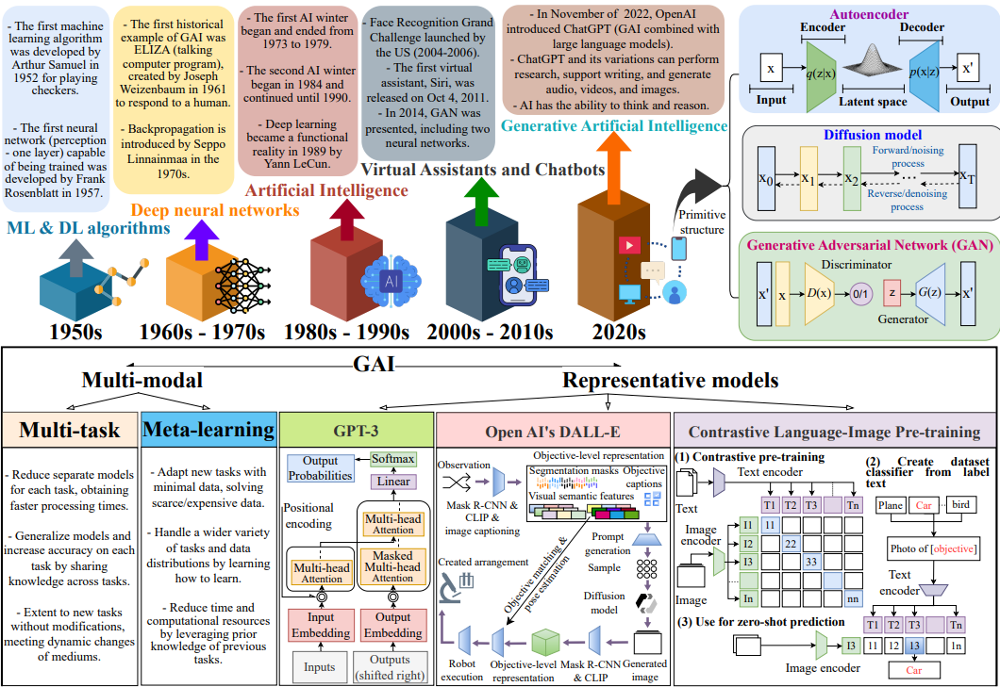
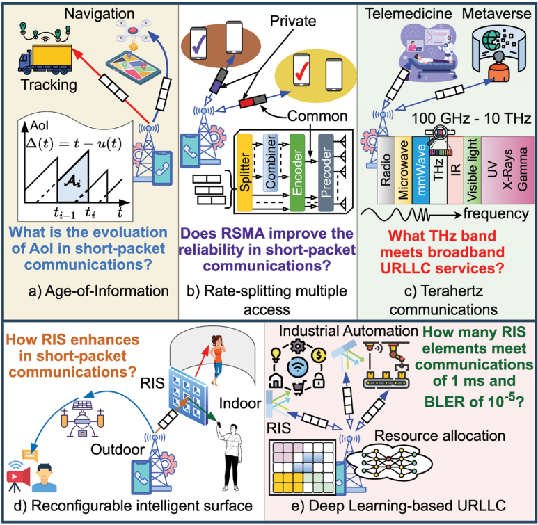

About
Thai-Hoc Vu received the B.Sc. degree in electronics and telecommunications engineering from the Posts and Telecommunications Institute of Technology (PTIT), Viet Nam, in 2019, and the Ph.D. degree in electrical, electronic, and information system engineering from the University of Ulsan (UoU), South Korea, in 2025. During his Ph.D., he achieved over 20 top-tier IEEE publications as the First Author. He has authored over 70 top-tier IEEE journal and flagship conference papers, accumulating 1500+ citations on Google Scholar Statistic. He specializes in performance analysis of wireless systems, with the focus on non-orthogonal multiple access, reconfigurable intelligent surfaces, short-packet transmission, and the application of convex optimization and machine learning. His accolades include:
- Vietnamese Young Scientists in Korea Award (2022)
- BK21 Best Research Awards (2021,2022,2023,2024,2025)
- IEEE Communications Letters Top Reviewer Awards (2023, 2024)
- Best Paper Awards from IEEE ICCE (2022, 2024) and IEEE ATC (2024)
- Vietnam Golden Globe Award in Science and Technology for Young Researchers (2025)
Research interests
- Topic 1 – Wireless Multiple Access: Non-orthogonal, Rate-Spliting.
- Topic 2 – Ultra-Reliable Ultra-Low Latency: Short-Packet Communication.
- Topic 3 – Cybersecurity: Physical Layer Security, Covert Communication, Encryption.
- Topic 4 – Quantum Technology: Key Distribution, Post-Quantum Cryptography.
- Topic 5 – Machine Learning: Federated Learning, Quantum Machine Learning.


Project/Grant
2026-2027
-
AI-assisted Quantum Communications for Hybrid Wireless Networks (ID: OPEN-36-54)
OPEN ACCESS GRANT COMPETITION OF IT4INNOVATIONS Link·
2026-2028
-
Performance Enhancement of Integrated Sensing and Communication
Networks Employing Federated Learning and Semantic Communications (ID: 102.02-2025.92)
VIETNAM NATIONAL FOUNDATION FOR SCIENCE AND TECHNOLOGY DEVELOPMENT - NAFOSTED Link· -
Improving Private Communications for Next-Gen by Exploiting
Advanced Multiple Access and Reconfigurable Surface (ID: 102.02-2025.97)
VIETNAM NATIONAL FOUNDATION FOR SCIENCE AND TECHNOLOGY DEVELOPMENT - NAFOSTED Link·
Selected Publications
2026
-
Latent Diffusion for Spectrum Sensing of Coexisting Radar and Communication Signals
IEEE Wireless Communications Letters, Ranking: Q1, Impact Factor: 5.5, Top ranking: 20% (QoS - 2024)
PDF · BibTeX -
Symbiotic Communication Systems in the Internet of Things: A Framework for Double Adaptive Performance Analysis
IEEE Wireless Communications Letters, Ranking: Q1, Impact Factor: 5.5, Top ranking: 20% (QoS - 2024)
PDF · BibTeX -
A Novel Sensing and Symbiotic Communication Approach
IEEE Wireless Communications Letters, Ranking: Q1, Impact Factor: 5.5, Top ranking: 20% (QoS - 2024)
PDF · BibTeX -
On the Performance of RSMA-based Visible Light Communication Systems with Multicolor LED
IEEE Internet of Things Journal, Ranking: Q1, Impact Factor: 8.9, Top ranking: 10% (QoS - 2024)
PDF · BibTeX
2025
-
Short-Packet Communications: Recent Advances and Research Challenges
IEEE Network, Ranking: Q1, Impact Factor: 6.3, Top ranking: 20% (QoS - 2024)
PDF · BibTeX -
Applications of Generative AI (GAI) for Mobile and Wireless Networking: A Survey
IEEE Internet of Things Journal, Ranking: Q1, Impact Factor: 8.9, Top ranking: 10% (QoS - 2024)
PDF · BibTeX -
Applications of Distributed Machine Learning for the Internet-of-Things: A Comprehensive Survey
IEEE Communications Surveys and Tutorials, Ranking: Q1, Impact Factor: 46.7, Top ranking: 1% (QoS - 2024)
PDF · BibTeX -
A Survey on Intelligent Internet of Things: Applications, Security, Privacy, and Future Directions
IEEE Communications Surveys and Tutorials, Ranking: Q1, Impact Factor: 46.7, Top ranking: 1% (QoS - 2024)
PDF · BibTeX -
Advanced Learning Algorithms for Integrated Sensing and Communication (ISAC) Systems in 6G and Beyond: A Comprehensive Survey
IEEE Communications Surveys and Tutorials, Ranking: Q1, Impact Factor: 46.7, Top ranking: 1% (QoS - 2024)
PDF · BibTeX
Preprints
Teaching
-
440-2103/04 Introduction to Communication Technologies (2025/2026 ZS)
VSB-Technical University of Ostrava, Winter Semester 2025/2026
This course delivers to students with basic knowledges: Signal transmission, communication networks, metallic networks, optical networks, access networks, wireless networks, computer networks, mobile technologies, safety of communications, multimedia communications, and the concept of the Internet of things. -
440-4218/02 Modeling and Dimensioning of Networks (2025/2026 LS)
VSB-Technical University of Ostrava, Summer Semester 2025/2026
This course delivers to students with basic knowledges: Topological models of communication networks, dimensioning and classification of service systems, queue issues, simulation and modeling of telecommunication systems, network emulation using GNS3 tool, dimensioning and modeling of LPWAN properties, and OMNeT ++ and NS3 tool for simulation and modeling of communication systems, differences, advantages, basic orientation in the environment.
-
Advanced Data Mining (8HTTT006)
Thu Dau Mot University, Summer Semester 2025/2026
This course delivers to students with knowledges: Data preprocessing, data mining tasks, algorithms, and data mining tools that can be used to assist data analysts and application developers in data mining.
Supervision
-
Partrik Kadlec
- Master Student, VSB-Technical University of Ostrava, Feb. 2026 - Present
- Research Topic: Design and Development of Quantum Key Distribution Over Satellite Networks
Professional Activity
- Reviewer: IEEE Transactions/Journals Link
- Organizer: Technical Program Committee Member/Chair for Conferences
- Technical Program Committee for International Conference on Research in Intelligent Computing in Engineering (RICE), HungYen, Vietnam (2022)
- International Conference on Advanced Technologies for Communications (ATC), Hanoi, Vietnam (2025) Link
- Speaker: Talk show, inspirational, effective learning, and research orientation, Phenikaa University. Link
Contact
Email: thai.hoc.vu@vsb.cz
Office: Room EA234, Building Faculty of Electronic Information, VSB-Technical University of Ostrava
Address: 17. Listopadu 2172/15, 708 00, Ostrava, Czechia